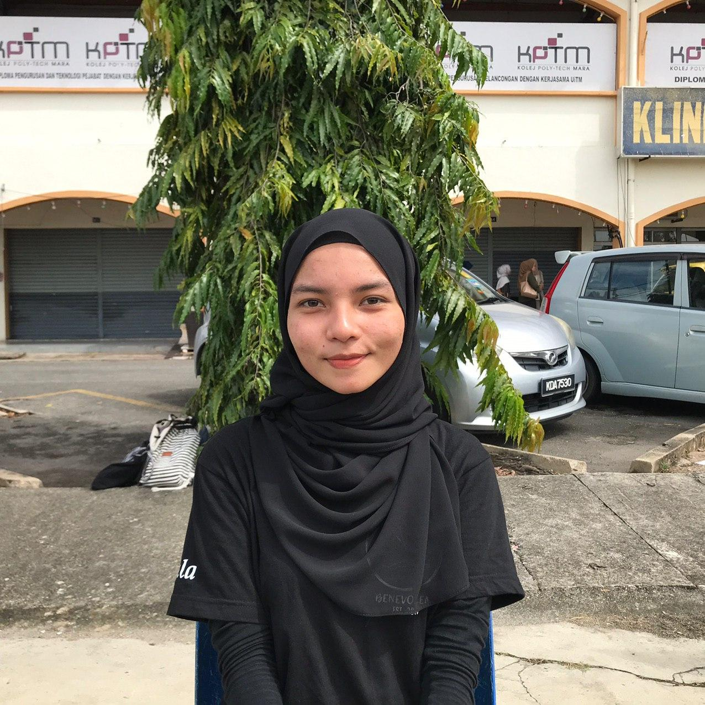
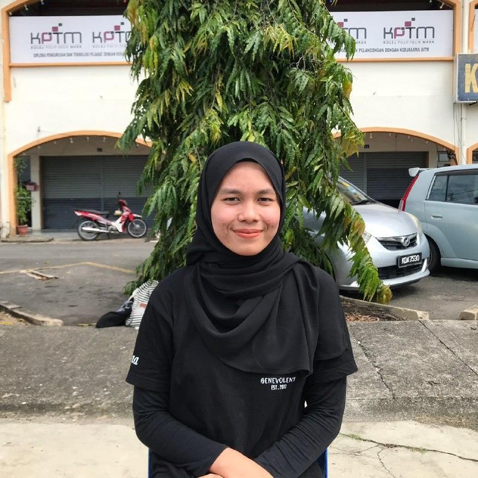
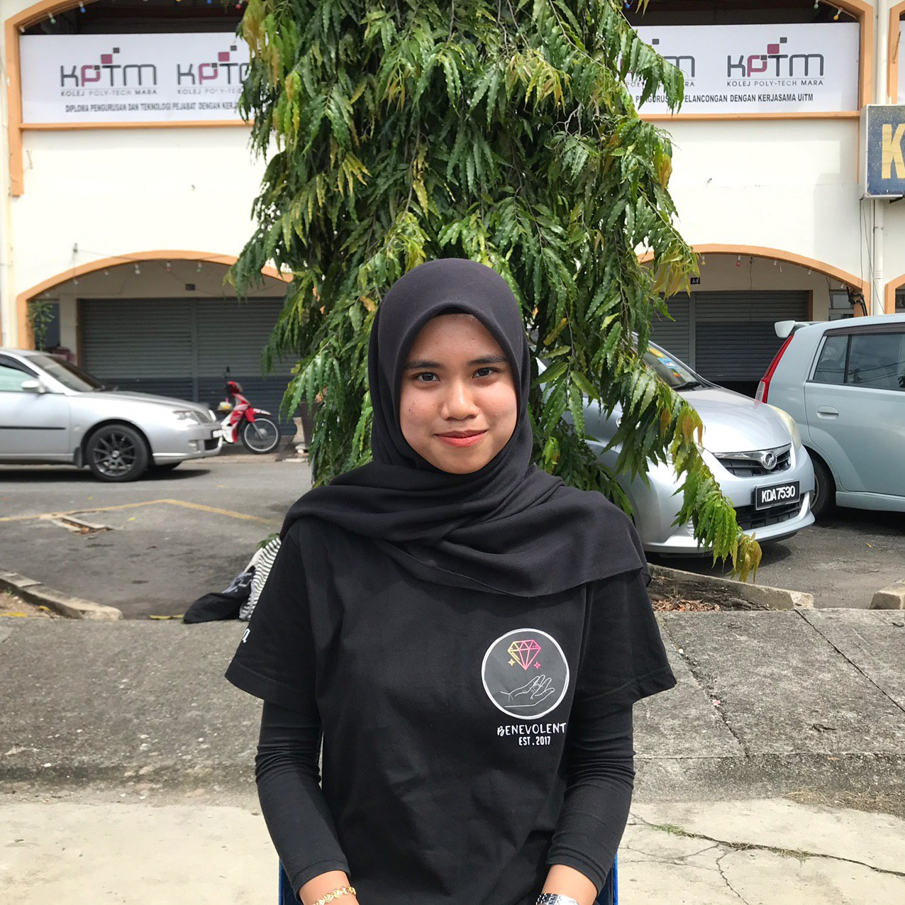
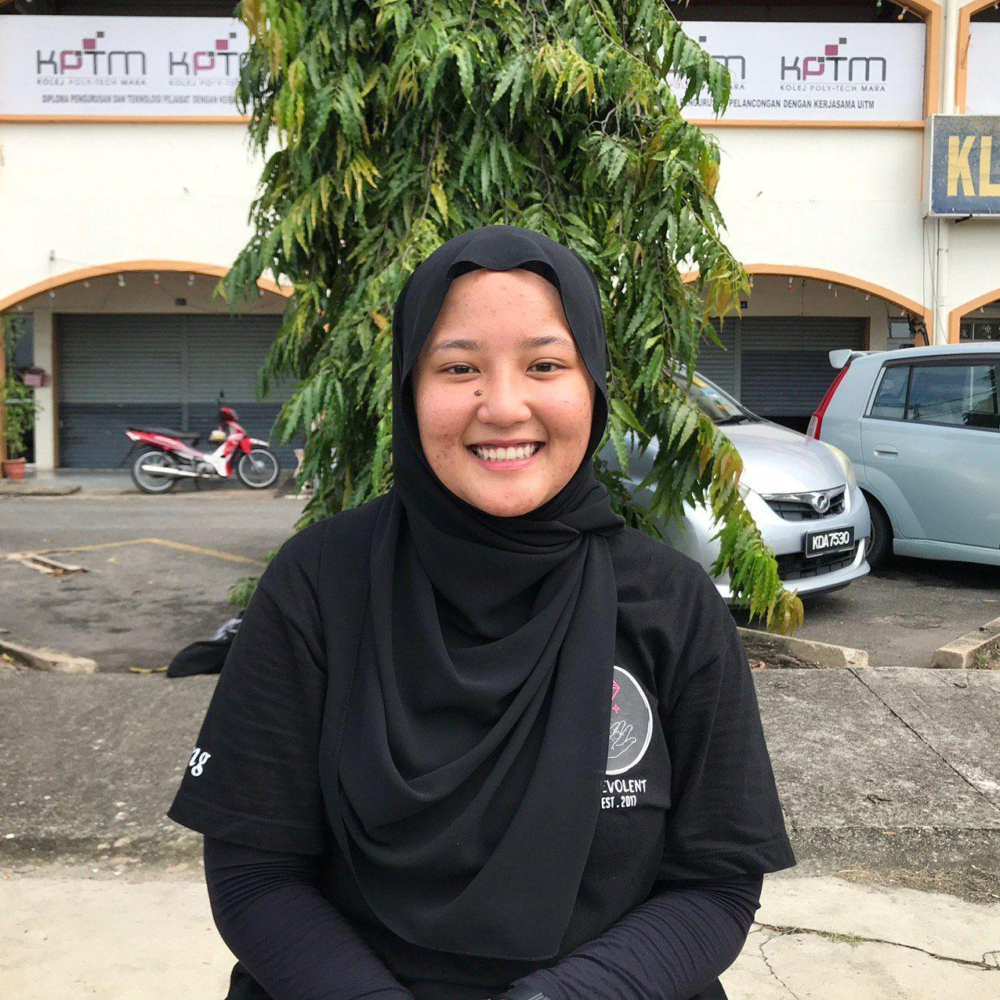

"It's the imperfection of film that makes it a perfection"
With the clock ticking by, moments come, moments go. Perhaps the only way to seize
time is to click on that shutter-release button.We’re KLIQ Studio.
It’s all started since 2014, where we started our journey as wedding photographer.
KLIQ
Initial of each photographer which are Khaleeda, Lala, Ida and Qyra.
The saying goes that too many cooks spoil the broth. Although that may be true for some of you,
we definitely do not relate to that around here. At KLIQ Studio, we believe that many
hands make light work and that every single person brings their own perspectives,
styles and characteristics into the work we do here, which very much contributes to the uniqueness and magic
you see - or even feel - when looking at a photograph. With a sweet, sentimental
friendship history revolving around photography, now, we are here and ready to capture your special moment! <3
Every photograph is unique and has a story to tell. What is yours? We welcome you to share your story through our lens.
 Lala “It all started back in 2010 after I graduated from my study. I picked up my first dslr not having a clue how to use it. Years passed and decided to dedicate all my free time to learn the ever growing art of photography and I’ve never looked back since! 2012 marks the year that I started taking things more seriously. I wanted my landscape photography, above all else, to grow on a much higher level. I wanted to share my experience with the world, whether it be educational or hopefully to some inspirational.” |
 Idaa "I fell in love with photography when I was gifted with my very first digital camera. With a 1.2MP Fuji digital camera in hand, I took every opportunity to pursue personal photographic experiments. Who knew I could now take photographs without having the need to buy, process and develop film? With that, I was hooked, and it sparked my passion for photography, which lasted through the years and brought me to where I am today." |
 Qyraa "Have you ever wondered how anyone makes a wedding photographer out of themselves? Well, for most of us here, it was unplanned – by pure chance. That’s exactly what happened with me. I documented my first wedding back in 2013 and on that day, it struck a chord in me. With it grew an immense passion for love and how it’s shared between people, and this element of my flows into the images I creates. I believes in capturing and enhancing the chemistry two people share, just as they are together. From honest and intimate, to the fun quirky,I strives to bring the best out of our couples." |
 Khaleeda "I got my first camera in 2012 and the rest was history. Since then my passion slowly develops from a hobby into a career. Being a photographer has given me a lot of opportunities to meet with people from different background all over the world. I strongly believes that a simple life is a happy life. Therefore, my fun-loving and cheerful characteristic are easily detectable even when I am behind the camera. I loves to be part of a wedding / event to be able to capture those precious moments through my lenses. Nothing beats real moments and natural emotion." |